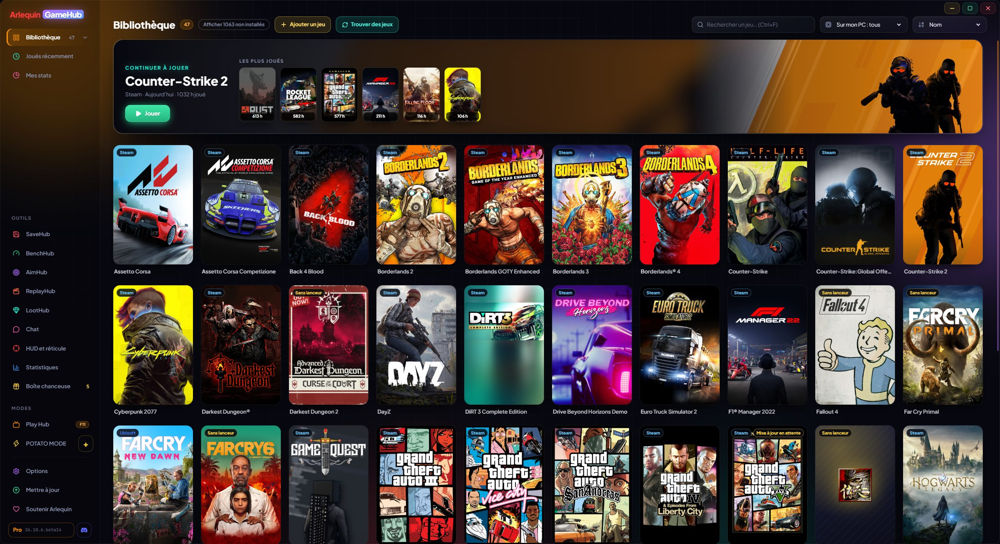

ArlequinGameHub
Le launcher de tous tes launchers : tous tes jeux au même endroit, tes sauvegardes toujours en sécurité et tout ce qu’il te faut pendant que tu joues.
Windows 10 et 11 (64 bits) · Se met à jour tout seul · Toutes les versions
La version de ce site reçoit en premier les nouveautés et améliorations : la version du Microsoft Store peut mettre un peu plus de temps à les recevoir.

Un seul programme pour tout ce que tu joues
Toute ta bibliothèque
Les jeux de toutes tes boutiques réunis, installés ou non, avec leurs jaquettes et tes heures de jeu.
En savoir plus →SaveHub inclus
Sauvegarde tes parties tout seul quand tu fermes chaque jeu. Restaure-les en un clic ou envoie-les dans ton cloud.
En savoir plus →HUD et réticule
FPS, températures et consommation par-dessus ton jeu, et un réticule réglable au dixième de pixel.
En savoir plus →Ça tourne sur mon PC ?
Vois si chaque jeu tournera bien sur ton PC, mesure tes vrais FPS et change ses réglages graphiques.
En savoir plus →Play Hub
Plein écran pour jouer depuis le canapé avec une manette Xbox, PlayStation ou Switch.
En savoir plus →Chat intégré
Discord, Steam Chat et TeamSpeak à côté de tes jeux, sans ouvrir d’autres fenêtres.
En savoir plus →Construit avec la communauté
Sa propre base de données de sauvegardes et de FPS, et des statistiques matérielles de ceux qui jouent.
En savoir plus →POTATO MODE
Une version native ultralégère, sans navigateur intégré, pour les PC aux ressources limitées.
En savoir plus →Trouve tes jeux tout seul
GameHub ne demande jamais le mot de passe d’une boutique : il lit ce que tu as déjà sur ton PC et lance chaque jeu avec son propre launcher.
Ce qu’un launcher normal ne t’offre pas
Il existe de très bons launchers qui rassemblent tes jeux. GameHub va plus loin : en plus de tout réunir, il veille sur tes sauvegardes et te dit comment chaque jeu tourne sur ton PC.
| Launcher d’une boutique | Launchers qui combinent les boutiques | Arlequin GameHub | |
|---|---|---|---|
| Les jeux de toutes tes boutiques réunis | Seulement les siens | Oui | Oui |
| Sauvegarde de tes parties à la fermeture de chaque jeu | Seulement avec son cloud | Avec des plugins | Oui, intégré |
| Sauvegardes dans ton propre cloud (Drive, OneDrive, Dropbox) | Non | En général non | Oui |
| Ça tourne sur mon PC ? avec la configuration requise de chaque jeu | Dans la boutique | En général non | Oui, dans ta bibliothèque |
| Mesurer tes FPS et voir ce qui te limite (GPU ou CPU) | Non | Non | Oui |
| HUD et réticule par-dessus le jeu | Non | En général non | Oui |
| Changer les réglages graphiques de chaque jeu de l’extérieur | Non | Non | Dans beaucoup de jeux |
| Discord, Steam Chat et TeamSpeak intégrés | Son propre chat | En général non | Oui |
| Mode ultraléger pour les PC modestes | Non | En général non | POTATO MODE |
| Demande les mots de passe de tes boutiques | — | Parfois | Jamais |
Le bon et le pas encore
- ✓Gratuit et sans publicité. L’essentiel n’est jamais payant.
- ✓Tes sauvegardes en sécurité sans y penser. Une copie à chaque fois que tu fermes un jeu, avec une protection si une sauvegarde est abîmée.
- ✓Léger. Et si ton PC manque de ressources, POTATO MODE est une fenêtre native sans navigateur intégré.
- ✓Tes données, ton choix. Tout ce qui est partagé est anonyme et tu peux le désactiver métrique par métrique.
- ✓Se met à jour tout seul et chaque version s’améliore grâce aux contributions des joueurs.
- !La première version stable vient de sortir. Si tu trouves un bug, préviens-nous.
- !Il n’est pas encore signé. Windows t’avertit la première fois : « Informations complémentaires → Exécuter quand même ».
- !Windows uniquement pour l’instant. Linux et le Steam Deck viendront plus tard.
- !La base de données ne fait que commencer. Pour les jeux moins connus, il faudra peut-être indiquer le dossier des sauvegardes à la main la première fois (ou GameHub l’apprend pendant que tu joues).
- !Les estimations de FPS ont besoin de joueurs. Tant qu’il y a peu de données sur un jeu, ses FPS sont calculés à partir de sa configuration Steam et sont approximatifs.
Tu l’essaies ?
⬇ Téléchargement direct 🛍️ Télécharger sur le Microsoft StoreWindows 10 et 11 (64 bits) · Gratuit · Se met à jour tout seul